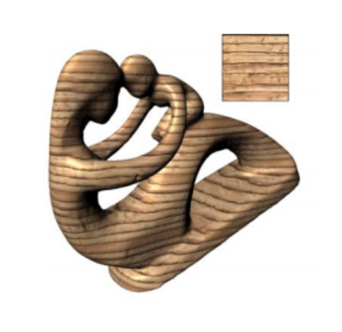

In our final project, we will be creating a solid texture from an existing 2D texture. We will be using 2D texture optimization techniques to achieve this goal.
In our previous projects for this class, we implemented simple texture mapping to objects in the scene. However, for many objects there are specific textures used to texturize certain objects. We will create a way to create a solid texture from an existing 2D texture, and apply the same solid texture onto multiple objects.
Solid textures bring advantages such as not needing any planar parameterization, and we can use the same solid texture to texturize multiple objects without having to create multiple different textures. As a result, we can simply “carve” our desired object out of a textured volume.
It will be difficult to change our implementation from generating a texture from a 2D texture and transitioning it so that the texture at a point on the object depends on its 3D position of the point. In order to implement this, we have to use the x, y, and z location of a pixel to calculate its color, opacity, brightness, etc. We think that one of the major issues in this project will be transitioning everything from object space to world space and mapping the texture correctly.
|  |
We plan to achieve the same level of fidelity and quality of images as shown in the paper. We will do this by visually comparing our results with those presented in the paper.
We will utilize the hive machines and our own machines. We will likely be coding in C++.
The Specs on our own machines:
Windows 10
Mac OS Catalina, 8GB Memory, 2.7 GHz i5
https://www.cs.princeton.edu/courses/archive/fall07/cos597B/papers/kopf-solid-texture.pdf
We also plan on using the starter code for earlier projects in this class and build on it. Since we already implemented 2d texture mapping, we plan on expanding the functionality of our ray tracer.